key, or
key, or  key in conjunction with other keys.
key in conjunction with other keys.Usually when you are using a graphical modeler, you do most of the actions with the mouse. Sirius based modelers have several built-in shortcut keys that you can use to save time in your day to day workflow. Shortcut keys are commonly accessed by using the key, key, or key in conjunction with other keys.
Some shortcuts are available for all the representations (diagram, table, tree...).
| Action | Shortcut | Description |
|---|---|---|
| Go to open editors | + | To get a direct access to an editor, just press Ctrl + E, and either use the arrow buttons, or type the name of the representation you are editing. |
| Navigate between visited representations | + or + | To cycle between visited representations use Alt + Arrows. On Mac : + + |
| Select All | + | 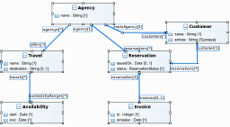 |
| Direct Edit |  | |
| Open Help | + | 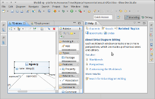 |
| Undo | + | On Mac: + |
| Redo | + | On Linux : + + , On Mac: + + |
| Save | + | |
| Save all | + + |
Shortcut keys help providing an easier and usually quicker method of navigation.
| Action | Shortcut | Description |
|---|---|---|
| Cycle between shapes on the diagram from left to right | ||
| Cycle between shapes on the diagram from right to left | + | |
| Navigate between shapes on the diagram | + | |
| Navigate into a container | + | 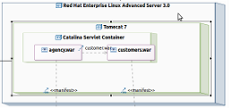 |
| Navigate out of a container | + | 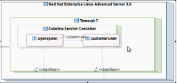 |
| Navigate clockwise among the existing edges | 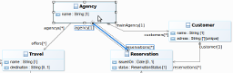 | |
| Navigate counter-clockwise among the existing edges | ||
| Show quick outline | + | 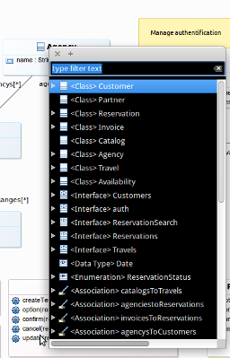 On Mac : + |
Below is a list of the shortcut keys that allow to select elements on the diagrams.
| Action | Shortcut | Description |
|---|---|---|
| Select in sequence | + | Hold down Shift, use navigation keys to select additional components. 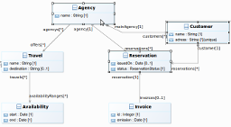 |
| Select multiple | + + | Hold down Ctrl, use navigation keys to navigate to additional components, press Space to select additional components. 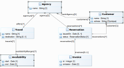 |
| Deselect | + | Deselect the selected shape/edge by showing the shape/edge in an outline. 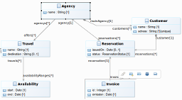 |
| Select diagram | Select the diagram and so deselect all other previous selections. |
It is also possible to use shortcuts to edit a diagram.
| Action | Shortcut | Description |
|---|---|---|
| Refresh | Force an update of the diagram according to the latest version of the semantic model. | |
| Copy semantic element | + | On Mac : + |
| Paste semantic element | + | On Mac : + |
| Copy layout | + + + | See Sirius copy/paste layout documentation. |
| Paste layout | + + + | See Sirius copy/paste layout documentation. |
| Hide element | +  | See Sirius hide elements documentation. |
| Hide label | +  | See Sirius hide labels documentation. On Mac : + |
| Show label | + + | On Mac : + + |
| Move shape |  | |
| Cycle on element handles | Cycle on Position Handle / 8 Side and Corner Size Handles / Position Handle. Clockwise rotation. | |
| Cycle through edge points | Cycle through the endpoints, bendpoints, and midpoints of a connection. Clockwise rotation. | |
| Manage edge | + +  | Remove all the bend-points to retrieve an original straight edge. See Sirius manage edge documentation. On Mac : + + |
| Move a component | + | Cycle once to the Move handle using the period key (.), use navigation keys to move, press Enter to accept new location or press Escape to cancel the move. |
| Constrained move | + | This action constrained the move by snaping the shape to the grid. |
| Move without snap | + | This action allows to ignore the snap while dragging a shape. On Mac : + |
| Resize a component | + Resize | Cycle to desired resize handle using the period key, use navigation keys to resize, press Enter to accept new size or press Escape to cancel the resize. |
| Centered resize | + | Expands the shape on both opposite sides. See Sirius resize elements documentation. On Mac : + |
| Resize that keeps the ratio | + | See Sirius resize elements documentation. |
| Resize without snap | + | Temporarily disables the snap during the resize if it is activated. See Sirius resize elements documentation. On Mac : + |
| Resize container keeping children relative | + | When the shape is resized using the left and/or top border, the children (contained nodes for container and border nodes for all shapes) are moved with the border. See Sirius resize elements documentation. |
| Reset diagram | + | The diagram can have a negative origin or can be shifted toward the bottom-right with a blank zone at the top-left. This action aims to move all diagram elements to retrieve its origin while keeping the element layout. See Sirius reset diagram documentation. On Mac : + |
The following shortcuts allow to zoom, scroll or invoke the context menu from the diagram.
| Action | Shortcut | Description |
|---|---|---|
| Zoom in | + 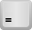 | 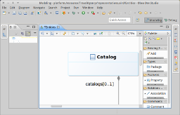 |
| Zoom out | + | 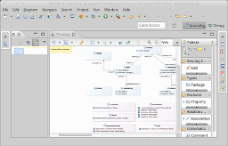 |
| Pan when zoomed in | + | Hold down spacebar and drag the mouse |
| Scroll in diagram | + + | |
| Invokes the context menu for the shape | + | 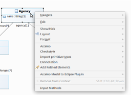 |
Keyboard shortcuts save you time by letting you explore the palette quickly.
| Action | Shortcut |
|---|---|
| Collapse or expand the selected group | or |
| Select tool | or |
| Stack popup list appears | + |
| Navigate between group & tools | or |
Some specific key shortcuts are also available on tables and trees.
| Action | Shortcut |
|---|---|
| Expand direct children | |
| Collapse | or |
| Expand all children |
Use keyboard shortcuts and increase your productivity!
This post is available on github : https://github.com/mbats/sirius-blog/tree/master/keyboard
{kind=link}
{kind=link}
{kind=link}
{kind=link}
{kind=link}
{kind=link}
{kind=link}
{kind=link}
{kind=link}
{kind=link}
{kind=link}
{kind=link}